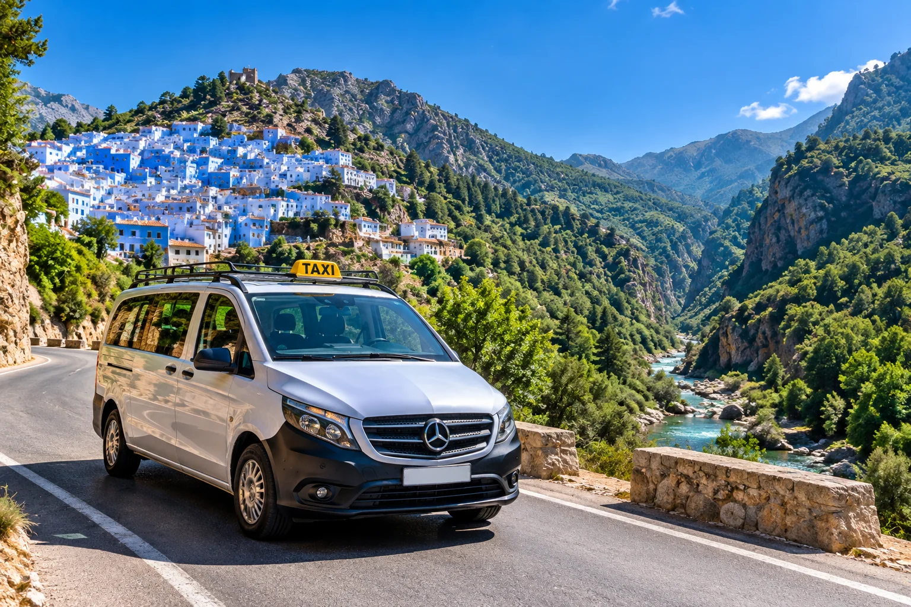
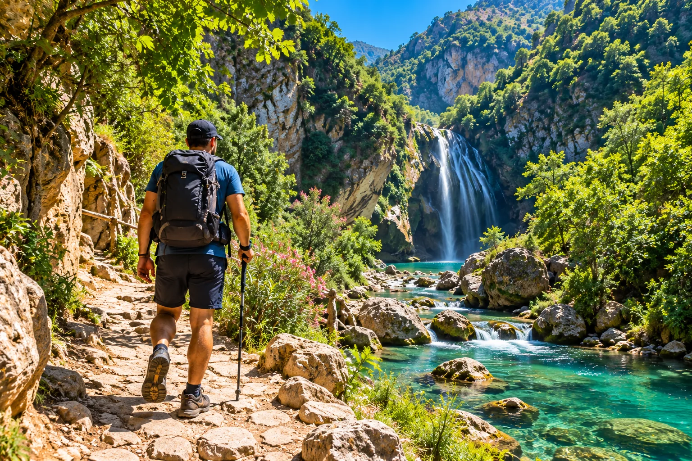
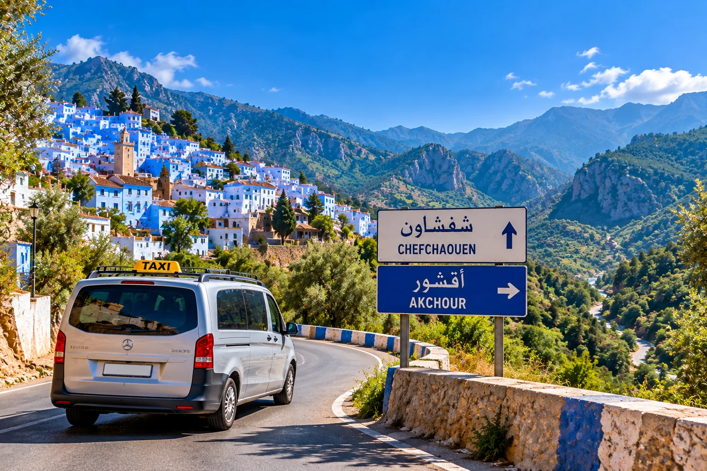

01 · Programme conseillé
Partir tôt de Chefchaouen
Le meilleur moyen de profiter d’Akchour
Un départ entre 7 h 15 et 8 h 00 donne une vraie marge pour la randonnée. Vous évitez une partie de l’affluence, marchez davantage à la fraîche et conservez assez de temps pour vous arrêter près de l’eau. Depuis Chefchaouen, les grands taxis partagés sont la solution la plus utilisée par les voyageurs indépendants. Ils partent lorsqu’ils ont suffisamment de passagers ; en basse saison, l’attente peut donc être un peu plus longue.
Avant de monter, demandez clairement le prix par personne et par trajet. C’est un détail important : certains voyageurs comprennent un prix annoncé comme un aller-retour alors qu’il concerne seulement l’aller. Selon le moment, le remplissage et la négociation, on rencontre souvent des tarifs autour de 20 à 35 MAD par personne et par trajet. Prenez cette fourchette comme un repère, pas comme un tarif réglementé garanti.
Pour un couple ou un petit groupe, un taxi privatisé peut être intéressant si vous privilégiez le confort et un horaire précis. Convenez alors du prix total et, si vous souhaitez que le chauffeur vous attende pour le retour, faites préciser les conditions avant le départ.
Gardez le numéro du chauffeur ou photographiez le véhicule si vous convenez d’un retour avec la même personne.

02 · Arrivée à Akchour
S’orienter avant de marcher
Deux grandes directions, deux expériences différentes
À l’arrivée, prenez quelques minutes pour repérer les départs de sentiers, les petits cafés et l’endroit où les taxis déposent les passagers. Akchour n’est pas une attraction fermée avec un parcours unique : c’est une zone naturelle traversée par plusieurs itinéraires. Les indications sur place peuvent changer et les conditions du terrain évoluent avec la pluie, le niveau de la rivière et les travaux éventuels.
Décidez ici de votre objectif principal. La Grande Cascade d’Akchour constitue la randonnée classique pour ceux qui veulent une journée centrée sur l’eau et les paysages de rivière. Le Pont de Dieu, grande arche naturelle sculptée dans le calcaire, offre une ambiance plus minérale et un parcours différent. Les deux sont magnifiques, mais les enchaîner à toute vitesse n’est pas la meilleure façon de profiter du site.
Si vous voyagez avec des enfants, des personnes peu habituées à la marche ou si vous arrivez tard, choisissez un parcours plus court le long de la rivière et des premières vasques. Il n’est pas nécessaire d’atteindre l’objectif le plus lointain pour apprécier Akchour.
Après de fortes pluies, demandez aux cafés ou aux randonneurs revenant du sentier si certains passages sont glissants ou si le niveau de l’eau complique les traversées.
03 · Option randonnée A
La Grande Cascade d’Akchour
Le choix le plus complet pour une première visite
La randonnée vers la Grande Cascade suit longtemps l’oued et traverse un décor très photogénique : rochers clairs, végétation dense, petites cascades, passerelles et bassins naturels. Le niveau technique n’est pas celui d’une randonnée alpine, mais le sol peut être irrégulier, humide et glissant. Des chaussures de randonnée légères ou de bonnes baskets avec semelle adhérente sont nettement plus adaptées que des sandales de ville.
Pour la grande cascade, comptez en général quatre à six heures aller-retour selon votre rythme, les pauses, la fréquentation et l’état du sentier. Les marcheurs rapides feront moins ; les voyageurs qui photographient, se baignent ou s’arrêtent déjeuner peuvent facilement dépasser cette durée. Ne construisez donc pas votre journée sur un chronomètre trop serré.
Au printemps, le débit est souvent plus spectaculaire et la végétation particulièrement verte. En fin d’été, le paysage reste beau mais certaines chutes peuvent être moins puissantes. L’intérêt d’Akchour ne se limite toutefois pas à la cascade finale : une grande partie du plaisir vient de la progression le long de la rivière.
Les petites échoppes présentes sur certains secteurs peuvent vendre boissons ou repas simples, mais leur ouverture et leur stock ne sont pas garantis. Partez toujours avec votre propre eau et une petite réserve énergétique.
L’eau peut être très fraîche, même lorsque l’air est chaud. Entrez progressivement, ne plongez jamais sans connaître la profondeur et méfiez-vous des pierres polies par l’eau.
04 · Option randonnée B
Le Pont de Dieu
Une immense arche naturelle au-dessus de la gorge
Le Pont de Dieu — souvent appelé « God’s Bridge » dans les guides anglophones — est une arche rocheuse naturelle qui domine la gorge. Son intérêt est très différent de celui de la Grande Cascade : moins centré sur une succession de bassins, davantage sur la géologie, les parois calcaires et le relief du Rif. Pour beaucoup de marcheurs, il faut prévoir environ trois à quatre heures aller-retour, avec de grandes variations selon le point exact atteint et les conditions du sentier.
Cette option convient particulièrement aux voyageurs qui apprécient la randonnée elle-même et les paysages minéraux. Comme ailleurs à Akchour, ne vous fiez pas uniquement à une application cartographique : le réseau mobile peut être irrégulier et les chemins secondaires ne sont pas toujours évidents. Téléchargez une carte hors ligne avant de quitter Chefchaouen si vous aimez disposer d’un support numérique.
Un guide local n’est pas obligatoire lorsque vous restez sur un itinéraire principal et que les conditions sont bonnes. En revanche, il devient pertinent si vous souhaitez explorer des variantes, si la météo récente a modifié les passages ou simplement si vous voulez randonner sans avoir à vous soucier de l’orientation.
Pour une première excursion orientée baignade et rivière : Grande Cascade. Pour une randonnée plus minérale et l’arche naturelle : Pont de Dieu.
05 · Équipement
Ce qu’il faut emporter
Peu de choses, mais les bonnes
Le principal risque d’une journée mal préparée à Akchour n’est pas le manque d’équipement technique : c’est de partir comme pour une simple promenade urbaine. Prévoyez au minimum de bonnes chaussures, de l’eau, une protection solaire, un petit encas, des espèces en dirhams et un téléphone suffisamment chargé. Une petite batterie externe est utile si vous utilisez le GPS et prenez beaucoup de photos.
Au printemps ou après une période pluvieuse, ajoutez une veste légère imperméable. En été, un chapeau et davantage d’eau deviennent prioritaires. Si vous comptez vous baigner, prenez un maillot, une serviette compacte et éventuellement des chaussures d’eau ; évitez toutefois d’utiliser ces dernières comme chaussures de randonnée principales sur tout le parcours.
Pour les voyageurs suisses, français ou belges qui utilisent leur téléphone comme en Europe, vérifiez le coût de l’itinérance avant d’arriver au Maroc. Une carte SIM locale ou une eSIM peut être plus pratique, mais aucune solution ne garantit une couverture parfaite au fond des gorges. Enregistrez donc les informations essentielles hors ligne.
Ne laissez pas de déchets sur le sentier. Un petit sac refermable pour remporter emballages, mouchoirs et bouteilles est l’un des objets les plus utiles de la journée.

06 · Budget
Combien coûte une journée à Akchour ?
Une excursion accessible sans agence
Akchour peut être une excursion économique si vous utilisez le grand taxi partagé et emportez une partie de votre nourriture. Le poste principal est le transport. À titre de repère, prévoyez souvent environ 20 à 35 MAD par personne et par trajet en taxi partagé depuis Chefchaouen. Les prix peuvent évoluer ; considérez toujours ce chiffre comme une estimation et confirmez le montant au moment du départ.
Ajoutez un budget pour un thé, une boisson, un tajine ou un déjeuner simple dans un café local si vous souhaitez manger sur place. Les tarifs ne sont pas forcément affichés partout : demandez le prix avant de commander. Si vous engagez un guide, négociez le montant total, la durée et l’itinéraire avant de commencer.
Pour un voyageur venant de France ou de Belgique, la carte bancaire est pratique à Chefchaouen mais moins utile sur les sentiers. Pour un voyageur suisse, le même principe s’applique : évitez de dépendre d’un paiement en CHF ou d’une conversion immédiate, puisque les petits paiements se font en dirhams. Retirer une somme raisonnable à Chefchaouen simplifie nettement la journée.
Transport partagé + repas local + boissons reste généralement une petite dépense par rapport à une excursion privée. Gardez néanmoins une marge pour un taxi privatisé si vous manquez le dernier retour partagé.

07 · Saison et sécurité
Quand visiter Akchour ?
Le débit de l’eau change complètement l’expérience
Le printemps est souvent la période la plus spectaculaire : les montagnes sont vertes et le débit des cascades est généralement meilleur. C’est un excellent compromis pour les voyageurs européens qui veulent marcher sans la chaleur intense de l’été. Les week-ends et vacances peuvent cependant attirer beaucoup de monde ; un départ tôt devient alors encore plus intéressant.
L’été offre des journées longues et rend la baignade plus tentante, mais les températures montent et certains secteurs sont très fréquentés. Commencez tôt, emportez davantage d’eau et évitez de sous-estimer l’exposition au soleil. En septembre et octobre, les températures sont souvent agréables pour marcher, même si le débit peut être inférieur à celui du printemps.
En hiver et après de fortes pluies, Akchour peut prendre un visage plus sauvage. Le principal enjeu est alors l’adhérence : rochers mouillés, boue et passages au bord de l’eau exigent plus de prudence. Si la météo est mauvaise, renoncer à une section n’est pas un échec ; le site restera là pour une prochaine visite.
Évitez de commencer une longue randonnée trop tard dans l’après-midi. Les gorges perdent rapidement la lumière et le retour devient moins confortable. Informez quelqu’un de votre itinéraire si vous partez seul, conservez de la batterie sur votre téléphone et gardez suffisamment d’eau pour le trajet retour.
Avril à juin pour l’eau et la végétation ; septembre et octobre pour une marche souvent agréable avec une fréquentation plus modérée selon les jours.
Une journée nature depuis Chefchaouen
Akchour, entre eau et montagne
Partez tôt, choisissez une randonnée principale et gardez du temps pour vous arrêter au bord de la rivière.
Questions fréquentes
FAQ — Excursion à Akchour
Le grand taxi partagé est généralement le moyen le plus simple. Comptez environ 45 minutes selon la circulation et les arrêts. Demandez le prix par personne et par trajet avant de monter.
On rencontre souvent des prix autour de 20 à 35 MAD par personne et par trajet en taxi partagé. Le montant varie avec la saison, le remplissage et la négociation : confirmez toujours le tarif sur place.
Choisissez la Grande Cascade si vous voulez profiter surtout de la rivière, des vasques et d’une randonnée classique. Le Pont de Dieu convient davantage si l’arche naturelle et un décor plus minéral vous attirent.
Un marcheur très entraîné peut combiner davantage de terrain en partant tôt, mais pour la majorité des visiteurs, choisir un seul objectif principal rend la journée plus agréable et plus sûre.
Pas nécessairement sur les itinéraires principaux lorsque les conditions sont bonnes. Un guide devient utile pour des variantes, après une météo difficile ou si vous voulez éviter toute hésitation d’orientation.
Oui dans plusieurs zones, mais l’eau est souvent froide et les rochers glissants. Ne sautez jamais dans une vasque dont vous ne connaissez pas la profondeur et surveillez le courant après les pluies.
Le printemps est excellent pour la végétation et le débit de l’eau. Septembre et octobre sont souvent agréables pour marcher. En été, privilégiez un départ très tôt.
Préparer l’excursion
Dormez à Chefchaouen et partez tôt
Une nuit à Chefchaouen permet de rejoindre Akchour le matin avant les groupes et de profiter pleinement de la randonnée.
Préparez le reste du voyage
Guides utiles pour le nord du Maroc
Comparatif
Tanger ou Chefchaouen ?
Choisir selon la durée, l’ambiance, la nature et votre type de séjour.
Lire →Formalités
Documents pour le Maroc
Passeport, séjour et informations pratiques pour préparer votre arrivée.
Lire →Tanger
Que faire à Tanger en 48h
Kasbah, médina, Café Hafa, Cap Spartel et Grottes d’Hercule.
Lire →